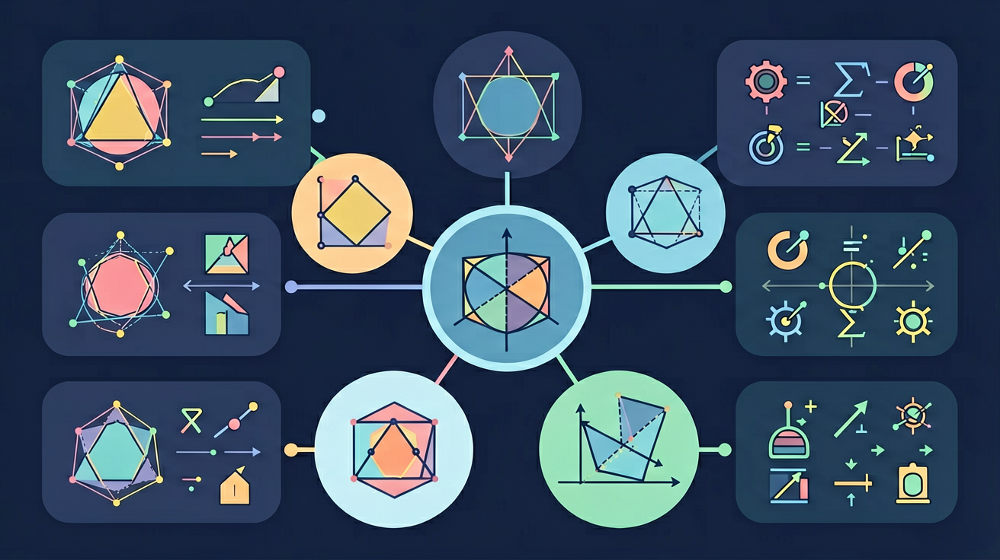

发现内角和公式，探索多边形世界的规律

❓ 为什么三角形内角和一定是180°？
❓ 五边形能分成几个三角形？怎么算内角和？
❓ 正多边形每个内角都一样大吗？
学完这一课，这些问题你都能自信地回答。
🎯 能说出n边形内角和公式(n-2)×180°
🎯 能判断多边形内角和计算方法的正误
🎯 能分析正多边形单个内角度数的计算方法
1. 三角形的内角和是？
2. 四边形的内角和是？
3. 五边形能被分割成几个三角形？
And：我们已经知道三角形内角和=180°，四边形内角和=360°。
But：五边形、六边形……n边形的内角和各是多少？逐个记忆太麻烦了。
Therefore：让我们用"三角剖分"方法找出规律，一个公式全搞定！
点击多边形，查看三角剖分
n=3
n=4
n=5
n=6
n=8
通用公式
📊 规律表格：
| 边数 n | 三角形数 | 内角和 |
|---|---|---|
| 3 | 1 | 180° |
| 4 | 2 | 360° |
| 5 | 3 | 540° |
| 6 | 4 | 720° |
| n | n-2 | (n-2)×180° |
💪 即时练习：七边形的内角和是？
知道了内角和公式，But 如果是正多边形（各边等长、各角相等），每个内角是多少？Therefore 用内角和除以边数！
正多边形每个内角 = (n-2)×180° ÷ n
| 正多边形 | n | 内角和 | 每个内角 |
|---|---|---|---|
| 等边三角形 | 3 | 180° | 60° |
| 正方形 | 4 | 360° | 90° |
| 正五边形 | 5 | 540° | 108° |
| 正六边形 | 6 | 720° | 120° |
| 正八边形 | 8 | 1080° | 135° |
💪 即时练习：正十边形每个内角是多少？
And 内角和随边数增大而增大，But 外角和呢？Therefore 让我们做一个思想实验——想象你沿多边形走一圈，一共转了多少角度？
💪 即时练习：正六边形每个外角的度数是？
一个正多边形的每个内角为150°，求这个正多边形的边数。
一个正多边形的每个外角为45°，边数是？
1. n边形的内角和公式是？
2. 十二边形的内角和是？
3. 任意凸多边形的外角和等于？
4. 正多边形每个内角为108°，是几边形？
5. 正多边形能铺满平面，每个内角必须能整除360°。以下哪个不能铺满平面？
探索正六边形铺平面效率最高的数学原理
埃舍尔的数学艺术，多边形拼贴的奥秘
在球面上，三角形内角和>180°！
n边形对角线数 = n(n-3)/2，推导看看
先独立作答，再点选项查看对错与错因。
一个四边形的内角和是____。
下列哪个条件不能证明四边形是平行四边形？
若正五边形每个内角为x°，则x的值为____。
梯形中位线长度等于____长度的一半。
答案：两底和
梯形中位线定理：中位线=(上底+下底)/2
若n边形有35条对角线，则n=____。
答案：10
对角线公式n(n-3)/2=35，解得n=10
关于菱形性质的描述正确的是？
记录四边形到八边形的对角线条数，寻找数量规律
将多边形分割成三角形，化繁为简
每增加一条边，内角和增加180°
正多边形内角大小随边数增加而趋近180°
观察蜂巢六边形结构理解实际应用
用内角和公式推导正多边形外角度数
✅ 正确公式应为(6-2)×180°
💡 混淆边数与三角形个数
✅ 需先说明五边形内角和为540°
💡 跳步计算缺少依据
口诀：边数减二乘一百八，内角和就出来啦！
类比：像搭积木，每多一块（边）就多一个三角形空间
四边形内角和是多少度？
正六边形每个内角是多少度？
十二边形的内角和是（中考真题）
若多边形内角和是1260°，它是几边形？
足球表面有黑白五边形和六边形，五边形内角和比六边形少多少度？
And：学生已学过三角形内角和为180°
But：但不知道边数增加后内角和如何变化
Therefore：建立多边形与三角形的关系
多边形是由三条或以上线段首尾相连组成的封闭图形。从三角形出发，每增加一条边就多一个角。例如：四边形可以分成2个三角形，内角和就是2×180°=360°。记住公式：(n-2)×180°，n代表边数。
🌍 足球由黑白五边形和六边形拼接而成，计算五边形内角和就知道缝制时需要弯曲的角度。
六边形的内角和是多少？
And：知道四边形内角和为360°
But：不理解公式(n-2)的由来
Therefore：通过分割理解公式本质
关键是把多边形分割成三角形。从同一顶点出发画对角线，五边形能分成3个三角形（5-2），所以内角和是3×180°=540°。动手画七边形试试：能分成5个三角形，内角和就是900°。分割时注意不能有交叉线。
🌍 蜂巢的六边形结构，蜜蜂本能地选择120°夹角，正好是六边形单个内角的度数。
八边形可以分成几个三角形？
And：已掌握内角和公式
But：不会计算正多边形单个内角
Therefore：推导特殊多边形角度
正多边形所有内角相等。先用公式算总内角和，再除以边数。例如正五边形：总内角和540°，每个角就是540°÷5=108°。记住两个关键步骤：1）用(n-2)×180°算总和 2）总和÷n得单角。
🌍 停车标志牌是正八边形，每个内角135°，所以相邻两边形成45°外角便于识别。
正十边形的单内角是多少？
And：能计算完整多边形内角和
But：遇到缺角或多角星不会处理
Therefore：拓展不规则图形应用
当图形缺少一个角时，先按完整图形计算再减去缺口。比如五边形缺了20°角：完整内角和540°，实际就是540°-20°=520°。对于五角星，其实可以看成五个三角形拼接，内角和180°×5=900°。
🌍 折纸剪去多边形的一个角，需要重新计算剩余部分的角度才能对齐折叠。
六边形缺失两个30°角后内角和是多少？
开放任务：用三步写出你如何向同学讲清「多边形与内角和」。